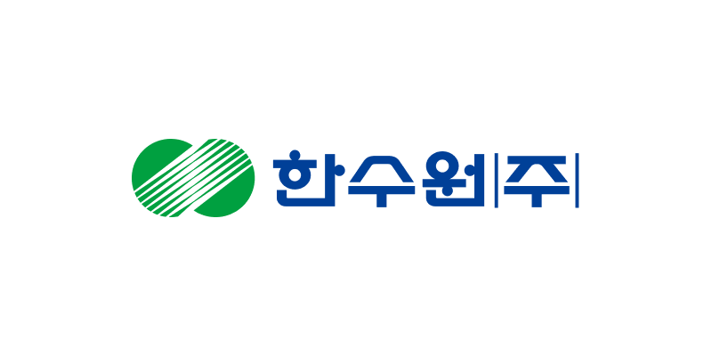
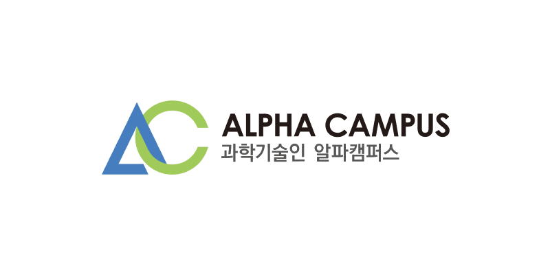
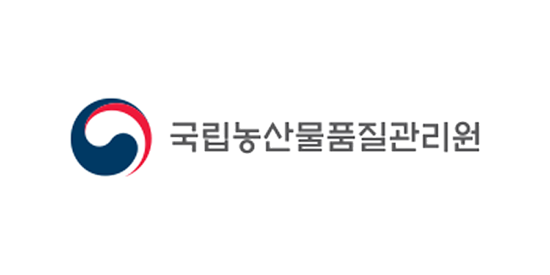
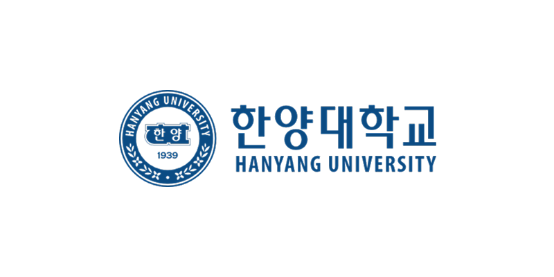
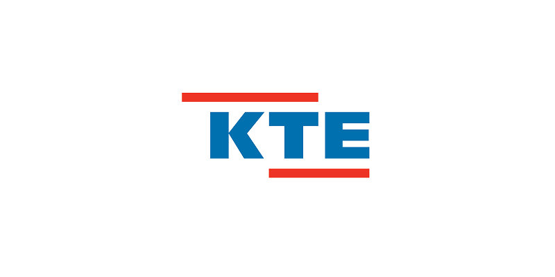

PROPOSAL
한수원 모바일 UI
구조제안서
구조제안서
Fixed MLM v1.0
모바일 화면 구조 표준안을 직접 설계 · 발표해 프로젝트 수주로 연결. 기술 문서가 영업 성과가 된 케이스.
일부 발췌 공개
발췌 보기
설계 · 디자인 · 퍼블리싱을 끊김 없이 한 사람이 끝냅니다.
PL로 다수 프로젝트 리딩. 한수원 ERP 팀원 4명 리드.
자동화 스크립트로 반복 수작업을 규칙 기반 변환으로 대체합니다.
한전 · 한수원 · 한전KDN 등 에너지 · 공공 시스템 반복 수행.
취향이 아니라 디자인 사조 · 표준의 맥락으로 클라이언트를 납득시킵니다.
“버튼이 너무 밋밋한데, 좀 더 화려하게 안 될까요?”
공공 · 금융 서비스에서 플랫 · 미니멀이 표준이 된 이유(신뢰감, 정보 명료성, 접근성 기준)를 사례와 함께 설명하고, 화려함 대신 명료함을 선택한 근거를 제시해 방향을 합의했습니다.
기획부터 DB · 프론트 · 배포까지 혼자 끝낸 실운영 서비스, 그리고 그 서비스를 React · TypeScript로 다시 짓고 있는 저장소.
메이플랜드 길드 운영 올인원 플랫폼. 확성기 로그 실시간 검색, 보스 타이머, 공대 모집, 레이드 정산·분배를 한 곳에서 처리합니다. Discord OAuth 로그인, 봇 DM 알림, 역할 기반 권한, 관리자 패널까지 — DB 설계부터 프론트엔드, 배포·운영을 혼자 구축한 실운영 서비스입니다.
직접 구현했던 해시 라우팅 · 상태 · 렌더링을 React Router와 훅으로 옮기고 있습니다. 목록 · 상세 라우팅과 실제 아이템 2,662종 연동을 마쳤고, 검색 조건을 URL 쿼리로 올려 뒤로가기와 링크 공유가 동작합니다. 한글 입력 시 IME 조합이 끊기던 문제를 추적해 고친 과정도 커밋에 남아 있습니다.
회사 홈 · 제품소개(UI Re-Styler) · 체험 페이지로 흩어져 있던 사이트를 단일 도메인으로 통합했습니다. JSP를 정적 페이지로 전환하고 KRDS 색상 체계를 적용했으며, 레퍼런스·연혁 화면은 로고 그리드와 연혁 타임라인을 직접 설계해 구축했습니다. Firebase Hosting으로 배포·운영 중입니다.
말이 아니라 기록으로. maplelog.gg를 React · TypeScript로 리빌드하는 maplelog-react 저장소가 자라는 중입니다.
7년을 관통하는 두 개의 축 — UI의 틀을 세우고, 그 틀을 자동화로 확장했습니다.
이젠고 UI 개발 패키지의 앞단을 정립하다. 개별 프로젝트가 아니라, 다른 프로젝트들이 딛고 설 기반을 만든 작업입니다.
데브팩으로 세운 UI 기반을, 이번엔 사람이 아니라 도구가 찍어내게. 만드는 것에서 만드는 방식을 만드는 것으로.
퍼블리셔로 시작해 설계 · PL까지. 왼쪽 레일이 곧 성장 곡선입니다.
AI 학습 플랫폼(LMS) 디자인 스타일가이드
통합 웹사이트 구축 (홈 · 제품소개 · 체험 통합)
UI컨버전 자동화 솔루션 패키지
DOOIT 시스템
모바일 원전건설사업관리시스템 구축
전산시스템 구축 프로젝트
비축농산물 전자입찰 PC/Mobile
한국전력 EP Re-Design
Devpack, SDI 모바일 패키지
금감원 경영정보
Devpack, SDI 모바일 패키지
한수원 경영관리 ERP 고도화 · 팀원 4명 리딩
통합 원전건설관리 / 업무포털 표준화 · 팀원 4명 리딩
채용관리 시스템 모바일
이마트24 차세대 경영주 모바일 시스템
이마트24 관리손익 시스템
학사관리 시스템
교내정보시스템 고도화 (넥사크로 전환)
KIS Information System
DevPack 모바일 디자인
채권추심 포털 · 대규모 데이터 그리드 UI 설계
ICD(안성) 포털사이트
통합개발 운영 플랫폼 구축 · 삼성 계열
한수원 발전운영 포털
SAP 기반 업무포털 구축
차세대 웹 프로젝트 (Java)
입출고 관리 시스템
통합포털 사이트
업무포털 시스템 재구축 (넥사크로 컨버전)
화면을 만드는 데서 끝나지 않고, 팀이 따라올 수 있는 가이드 · 제안서 · 규칙을 직접 씁니다. 회사에서도, 개인 프로젝트에서도 같은 방식으로.
모바일 화면 구조 표준안을 직접 설계 · 발표해 프로젝트 수주로 연결. 기술 문서가 영업 성과가 된 케이스.
컬러 · 타이포 · 컴포넌트 표준을 정의한 UI 가이드. 기획자–디자이너–개발자가 같은 기준으로 일하게 만드는 문서.
반복 컨버전 작업을 자동화하는 도구를 만들고, 누구나 쓸 수 있게 매뉴얼까지 작성. v1.9까지 개정 운영.
색 · 타이포 · 간격을 토큰으로 정의(KRDS.md)하고, AI에게 일을 시키기 위한 규칙을 문서화(CLAUDE.md). 카파시가 말한 context engineering을 실제 프로젝트에 적용했습니다.
숙련도 바 대신, 실제 프로젝트에서 쓴 것과 쓸 수 있는 것으로 구분했습니다.
에너지 · 공공부터 금융 · 교육 · 제조까지, 22개 고객사 29개 시스템. 카드를 누르면 해당 프로젝트 연혁으로 이동합니다.
원전건설사업관리 시스템의 모바일 UI 구조를 설계하고, 제안서를 직접 작성해 발주처 최종 승인을 받았습니다.

한국수력원자력통합 원전건설관리 시스템의 업무포털 UI를 표준화했습니다. 팀원 4명을 리드해 화면 설계부터 마감까지 수행했습니다.
DOOIT 업무포탈을 XPlatform에서 넥사크로로 컨버전했습니다. 사내 자동화 도구를 실제 전환 공정에 적용한 프로젝트입니다.
전산시스템 구축의 메인 디자인 가이드를 수립하고 퍼블리싱을 총괄했습니다.
비축농산물 전자입찰 시스템의 PC·모바일 메인 UI/UX를 설계했습니다. 사내 XD→Figma 전환을 제안한 시작점이기도 합니다.

알파캠퍼스AI 학습 플랫폼(LMS)의 디자인 토큰·컴포넌트·템플릿 표준을 정의하고, v1.3까지 개정 운영하고 있습니다.
모바일 원전건설 · 경영관리 ERP 고도화
통합 원전건설관리 · 업무포털 표준화
사내 포털 EP 리디자인
한수원 발전운영 포털
차세대 웹 · 웹표준 기반 구축
전산시스템 · 메인 디자인 가이드
경영정보 시스템
채권추심 포털 · 대용량 그리드 UI
비축농산물 전자입찰 PC/Mobile

농산물품질관리원DevPack · SDI 모바일 패키지 적용 총괄
차세대 경영주 모바일 · 관리손익
AI 학습 플랫폼 LMS 디자인 스타일가이드

한양대학교교내정보시스템 넥사크로 전환
SAP → 넥사크로 업무포털
학사관리 시스템
DOOIT 업무포탈 컨버전
KIS ERP · 채용관리 모바일
업무포털 넥사크로 컨버전
통합 개발 · 운영 플랫폼 (삼성 계열)
입출고 관리 시스템
안성 업무연동 포털사이트

KTE통합포털 사이트
DevPack · UI컨버전 · 통합 웹사이트